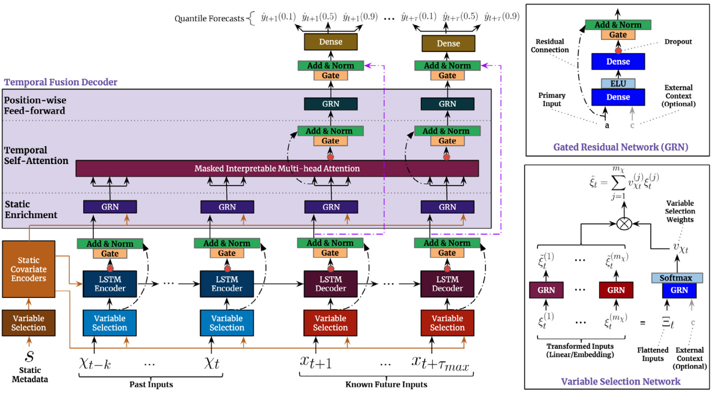

Bitcoin Price Prediction using
Temporal Fusion Transformer


Data preprocessing is very important when dealing with time-series forecasting, not only it can makes the model worse, but can also bla bla bla. hence a lot of data preprocessing trial and error was done, exempli gratia outlier handling using Simple Moving Average and Boxplot is explored. Also Data Normalization is done using First Order Differencing Transformation to handle volatility.
It is concluded that Temporal Fusion Transformer is more superior compared to its predecessor. Explainability of the model can also be found the most important variables in the Encoder are Trend and linear_increase with significance over 10%, and Trend even reaches over 50%. In the Decoder, Trend and week are the more important variables, with Trend over 40% and week over 10%. Not only that, the model's attention to the explanatory variables can be seen that Attention rises during training precisely at point -7, so it can be concluded that the model uses great attention to the 7 points before forecasting is done to make the forecast.